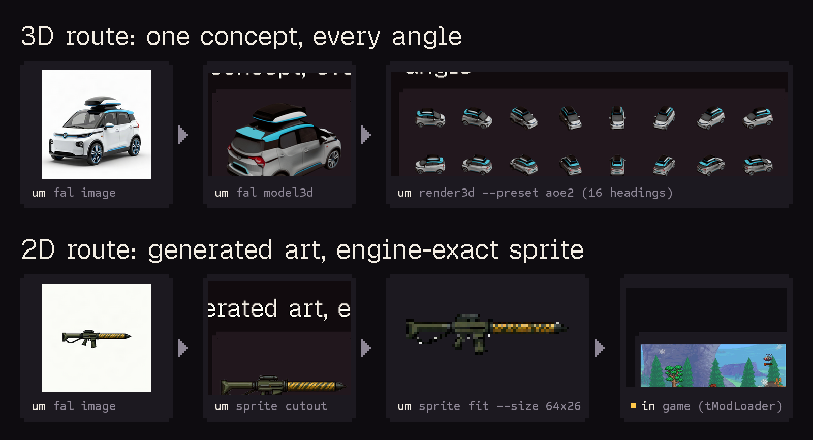

Universal Modder
A game-modding toolkit for AI agents - tell Claude Code what you want changed in a game, and it does the modding for you.
Ask Claude Code to add a new weapon to Terraria or build a civilization for Age of Empires 2 - Universal Modder gives it the playbooks and tools to mod 12 game engines.

How does it work?
You want to mod a game - add a weapon, a character, a map - but learning each engine's modding tools takes hours, and every game works differently.
You want to add a custom sword to Terraria, but that means learning tModLoader, setting up the project structure, writing the item code and compiling a mod.
You ask Claude Code to mod the game, or run the um command yourself.
um mod terraria 'Add a legendary crystal sword that shoots beams' - the agent reads Terraria's modding playbook and starts building.
A description of what you want - a weapon, a character, a civilization, a map - and which game it's for.
A new civilization for Age of Empires 2, a weapons pack for Terraria, or a vehicle mod for GTA V.
It gives your AI agent step-by-step playbooks for 12 game engines, handles asset creation and compiles a working mod.
- The agent reads the engine playbook (Terraria, AoE2, GTA V, Minecraft, Unity, Unreal and more) to learn that engine's modding workflow
- It generates the assets (sprites, 3D models, textures) using the 2D or 3D pipeline
- It writes the mod code, sets up the project structure and compiles the mod for the target engine
The README's Terraria example: describe a weapon, and the agent generates the sprite, writes the item code, and produces a loadable tModLoader mod.
A working game mod, ready to load into your game.
- A compiled modA tModLoader mod for Terraria with a custom weapon, ready to drop into your mods folder
- Generated game assetsSprites, 3D models or textures created through the modding pipeline
- Mod project filesThe full project structure, so you can open it in the engine's modding tools and keep editing
What changes for me?
Without it
- Modding a game means learning that engine's modding tools, project structure and asset format - a different setup for every game.
- Creating game assets (sprites, models, textures) for a mod means learning a 3D tool or pixel editor on top of the modding tools.
With it
- Describe what you want and which game - the AI agent handles the engine-specific workflow, asset creation and compilation.
- 12 engine playbooks in one toolkit: mod Terraria, AoE2, GTA V, Minecraft, Unity, Unreal and more with the same tool.
How hard is it to try?
Effort
- Read the Universal Modder README to see which game engines are supported and what the
umcommand does. - Install Universal Modder in Claude Code and pick a game you own. Ask Claude Code to create a simple mod (a new item or character).
- Load the generated mod into your game and test it. Check the project files to see the full structure the agent created.
What it takes on your computer
- Space on disk
- No data found for install size. It is a set of skills, tools and playbooks that Claude Code uses - not a standalone application.
- Memory while it runs
- No data found. Runs through Claude Code, so resource use depends on the modding task and the game engine's own tools.
- Runs on
- Wherever Claude Code runs (Mac, Windows, Linux). Each game engine has its own platform requirements.
Paste this into Claude Code. It runs your safety scan first, then a 10-minute test.
/skillspector https://github.com/rehan-remade/universal-modder If that scan passes: install Universal Modder, pick a supported game engine from the playbook list, and ask Claude Code to create a simple mod (like a new weapon for Terraria). Show me the generated files. 10 minutes max.
Should I?
Great if you...
- You want to mod games but don't want to learn each engine's modding tools - describe what you want and let the AI handle the details
- You play multiple moddable games and want one toolkit that covers Terraria, AoE2, GTA V, Minecraft and more
Skip it if...
- You are an experienced modder who already knows your engine's tools - Universal Modder adds a layer of AI abstraction you may not need
- You want to mod a game not in the 12 supported engines - you'd need to write your own playbook
Instead, you could look at
- Nexus ModsThe largest mod-sharing site. Download finished mods from other creators instead of building your own.
- Manual modding with engine toolsEach engine's official modding toolkit (tModLoader for Terraria, Creation Kit for Skyrim). More control, but you learn each one separately.
Is it safe?
- Security advisories: 0GitHub's advisory list, checked Oct 10
- Searches for CVEs, vulnerabilities, malware and scams0 results read, including the national CVE database: nothing found
- Are the stars earned?6.1K stars, 63 contributors, 125 commits. findarepo: looks organic
Watch out for
- 9 days old and early. The playbooks and asset pipelines are new. Expect rough edges, especially on less-tested engines.
- Quality depends on the AI agent. The mod's code and assets are generated by Claude Code. Complex mods may need manual editing.
- You need the game and its modding tools installed. Universal Modder drives the modding workflow but doesn't replace the game's own mod loader or compiler.
- Only 125 commits so far. The project is small. Playbook coverage and asset-pipeline quality will improve - or stall - depending on the maintainer.
Who's using it, and for what?
Universal Modder is 9 days old. Named real-world use outside the project's own demos is still very early.
We couldn't find anyone describing real use of it yet. That's normal for a brand-new repo, and it's worth knowing.
Who's talking about it
- findareporehan-remade/universal-modder on findarepo
- GitHub Trendingrehan-remade/universal-modder on GitHub Trending